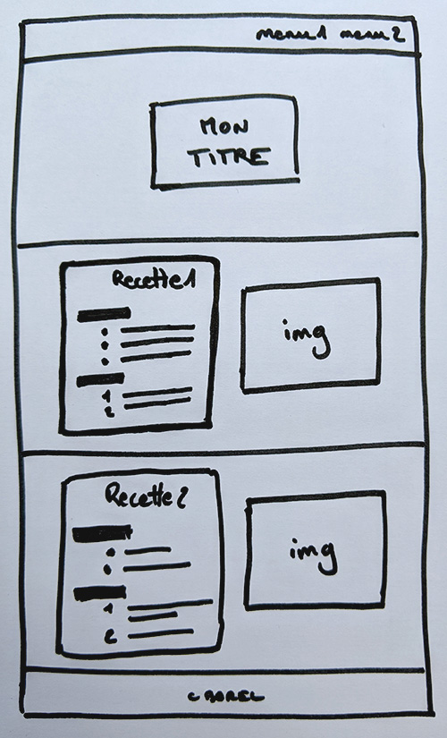
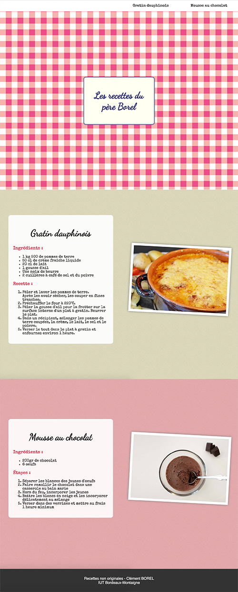
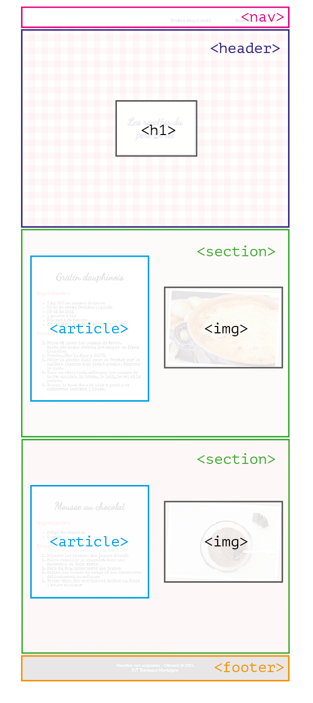
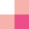

Flexbox en pratique
Nous souhaitons réaliser un site de recettes de cuisine. La première étape consiste à réaliser la maquette de notre site. Celle-ci peut très détaillée (réalisée avec Illustrator ou Photoshop par exemple) ou beaucoup plus simple, sous forme d'un simple crayonné.
 Squelette du site
 Maquette du site
Voilà donc le site que je souhaite réaliser. C'est un site one page. Il est composé d'un menu en haut, suivi d'un en-tête avec le titre qui prend toute la haute de l'écran. Viennent ensuite 2 autres "pages" (qui prennent toute la hauteur de l'écran) contenant me recettes et une illustration. En bas du site se trouve un pied de page contenant quelques informations complémentaires.
Chaque fiche recette est composée d'un titre, de la liste des ingrédients et de la liste des étapes à suivre.
Nous allons procéder en deux temps : 1. Nous allons construire le squeletteHTMLde la page. 2. Puis nous allons le mettre en forme et le mettre en page avecCSS.
Squelette HTML
La première chose à faire est de distinguer les principaux blocs sur la maquette. Ces blocs vont constituer le squelette de notre page.
Pour créer ce squelette, nous allons utiliser différentes balises HTML :
- les balises structurantes de HTML5, que nous connaissons : <header>,<section>,<nav>, etc. ;
- la balise universelle<div>quand aucune balise structurante ne convient.
Comment savoir quelle balise utiliser ?
C'est à vous de décider. De préférence, utilisez une balise qui a du sens (comme les balises structurantes<header>,<section>,<nav>) mais, si aucune balise ne vous semble mieux convenir, optez pour la balise générique<div>.
Dans notre cas, j'opterais pours cette structure :  Structure HTML du site
On peut imaginer d'autres façons de faire le découpage, retenez bien que ma proposition n'est pas forcément la seule et unique solution !
Toutes les balises que l'on va utiliser n'apparaissent pas sur cette maquette mais cela vous permet d'avoir une idée de l'imbrication que je propose pour les éléments.
Le HTML n'est pas vraiment la partie complexe de la réalisation du site web. En fait, si vous avez bien compris comment imbriquer des balises, vous ne devriez pas avoir de mal à réaliser un code approchant du mien.
Voici la structure globale :
1 2 3 4 5 6 7 8 9 10 11 12 13 14 15 16 17 18 19 20 21 22 23 24 25 26 27 28 29 30 31 32 33 34 35 36 | |
Par soucis de lisibilité, j'ai volontairement supprimé de ce code les contenus du menu et des articles. Voilà à quoi ils ressembles :
Menu :
1 2 3 4 5 6 | |
Article :
1 2 3 4 5 6 7 8 9 10 11 12 13 14 15 16 | |
- Vous pouvez télécharger l'exemple complet sans mise en forme CSS.
- Ceux qui le souhaite, peuvent essayer de réaliser la mise en page seuls ; pour les autres, je la détaille juste après.
Mettre en forme en CSS
Les choses se compliquent un peu plus lorsqu'on arrive au CSS. En effet, il faut du travail (et parfois un peu d'astuce) pour obtenir un résultat se rapprochant de la maquette. Je dis bien « se rapprochant » car vous ne pourrez jamais obtenir un résultat identique au pixel près.
Mettez-vous bien cela en tête : le but est d'obtenir le rendu le plus proche possible, sans chercher la perfection. D'un navigateur à l'autre, y aura des différences.
Plus votre structure html est simple et claire, plus la mise en page et la stylisation sont simples.
Essayez de pratiquer en parallèle en suivant les explications. N'hésitez pas à tenter quelques fantaisies ;)
Les titres et les polices
J'ai choisi deux polices de caractère sur Google Font pour les textes de mon site. Le titre du site ainsi que le titre des recettes seront en Dancing Script, le reste du texte en Special Elite.
Je les importe :
1 2 | |
Puis je déclare que l'ensemble des éléments de mon site (body) utiliseront la police Spécial Elite ; sauf les h1 et h2 qui seront en Dancing Script. J'en profite pour ajuster la taille, l'alignement et la couleur des différents niveaux de titres.
1 2 3 4 5 6 7 8 9 10 11 12 13 14 15 16 17 18 | |
Le titre
Vous remarquerez que le titre ressemble à une étiquette d'écolier. Comment transformer notre <h1> pour s'en rapprocher ?
Il faut :
- lui donner une taille (
width,height) - jouer sur la couleur de fond (
background-color) et le contour (border) - centrer horizontalement et verticalement le contenu (avec FlexBox)
- et pourquoi pas modifier légèrement la forme en mettant des bords arrondis (
border-radius)
1 2 3 4 5 6 7 8 9 10 11 12 13 14 15 | |
Les recettes
Sur chaque page, les "fiches recettes", partage le même aspect visuel : une certaine largeur, un fond coloré, des bords arrondis, des marges internes…
Nous allons opter pour une taille en pourcentage afin que les articles puissent se redimensionner en fonction de la taille de l'écran.
Nous imposerons également une taille minimale (min-width) afin que nos articles gardent une taille raisonnable sur des petits écrans.
Tous nos <article> partagent donc les mêmes propriétés CSS :
1 2 3 4 5 6 7 8 9 10 11 12 13 | |
Les images
Stylisons un peu les images…
Pour mon site de recettes, j'ai opté pour un rendu "manuel", comme si elles étaient collées sur mon cahier.
Les photos on un contour blanc (border), une ombre portée (box-shadow) et sont légèrement inclinées (transformation).
Comme pour les "fiches-recettes", nous allons exprimer une taille en pourcentage pour que les images puissent se redimensionner en fonction de la taille de l'écran mais également contraindre leur taille (min-width, min-height) pour limiter le rapetissement.
Je ne souhaite pas nécessairement que toutes les images de mon site partagent ces styles. Seules les images de recettes doivent se comporter ainsi. Je vais donc créer une classe .imgRecette que j'appliquerai aux images souhaitées :
Ne pas oublier de spécifier les classes en HTML :
1 | |
Puis le CSS :
1 2 3 4 5 6 7 8 9 10 11 | |
C'était aussi l'occasion de vous montrer comment définir des ombres et effectuer des transformations géométriques. Plus d'info ici et là.
Notez qu'il existe aussi quelques outils en ligne pour générer le code CSS des ombres :
Le menu
Comme nous l'avons déjà vu, il est facile de créer un menu horizontal à partir d'une liste en utilisant la propriété display:inline (cf. Ch.4 - HTML et CSS en pratique).
Nous pouvons désormais essayer de mettre notre menu en page en utilisant la méthode FlexBox…
1 2 3 4 5 6 7 8 9 10 11 12 13 14 15 16 17 18 19 20 21 22 23 24 25 | |
La taille des différentes parties
Nous allons désormais travailler la taille des différentes parties du site (en-tête, section et pied-de-page).
Pour le pied-de-page, c'est relativement simple. On lui donne une certaine hauteur, une certaine couleur, et le tour est jouer :
1 2 3 4 | |
Pour l'en-tête (header) et les sections (section), c'est un peu plus délicat puisque nous souhaitons que chacune de ces parties occupent toute la hauteur de l'écran.
En réalité, c'est très simple... Il existe une unité (au même tityre que le pxou le %) qui exprime un pourcentage de la taille actuelle de l'écran. Il s'agit de vw (viewport width) pour la largeur et vh (viewport height) pour la hauteur ; les valeurs s'exprimant en pourcentage.
Ainsi, un élément avec la propriété CSS :
width:100vwprendra toute la largeur de l'écran.height:100vhprendra toute la hauteur de l'écran.height:50vhprendra la moitié de la hauteur de l'écran.- etc.
Pour la largeur, préférez les tailles en pourcentage classique.
Donc en CSS, je dois ajouter :
1 2 3 4 5 6 7 8 | |
Profitons-en pour modifier la couleur de fond de l'en-tête et des sections. Pour l'en-tête j'ai choisi un motif vichy (genre "nappe de bistrot" ou "saucisson Cochonou®" si vous préférez). Le motif vichy, comme tous les motifs, consistent en un petit élément qui se répète à l'infini.

La bonne idée est d'utiliser une image de l'élément minimal du motif et de laisser CSS le répéter en image de fond (background-image). Cela prendra moins de place (en terme de poids) dans votre site et se chargera plus rapidement qu'une image entière.
Reprenons donc :
1 2 3 4 5 6 | |
Pour les sections, une couleur de fond suffira mais il faut pouvoir différencier nos différentes sections (recette 1, recette 2, etc.). Car si j'écris...
1 2 3 4 5 | |
... toutes mes sections auront la même couleur ! On est d'accord ?
Je dois donc utiliser une classe différente pour chaque section et définir le style de ces classes en CSS.
N'oublions pas de le préciser dans le fichier HTML :
1 2 | |
En CSS on précise pour chaque classe la couleur que l'on souhaite :
1 2 3 4 5 6 7 8 9 10 | |
Classe ou identifiant ?
Il existe une autre possibilité afin de nommer individuellement des éléments en HTML et ainsi pouvoir les sélectionner indépendamment en CSS. Ce sont les identifiants id.
En HTML, il s'agit d'un attribut qui fonctionne exactement de la même manière queclass :
1 2 | |
Et en CSS, on l'appelle grace au caractère #:
1 2 3 | |
À la différence d'une classe qui peut être donnée à plusieurs éléments (rappelez-vous de l'exemple avec les boutons), un identifient ne peut être utilisé qu'une seule fois dans le code HTML. Si je suis mon exemple, je ne peux pas avoir un autre élément avec l'id="recette1".
Pour reprendre notre exemple :
1 2 3 4 5 6 7 8 9 10 11 12 | |
Mais quel est l'intérêt d'utiliser idplutôt que class? À notre niveau, il y en a assez peu. L'intérêt principal dans le cas de notre site de recette en one page est de pouvoir créer des ancres dans ma page et ainsi de pouvoir positionner la page au bon endroit quand je clique sur les liens de mon menu.
Puisqu'un identifiant est unique (qu'il ne peut être présent qu'une seule fois dans chaque page) il me permet de définir de manière univoque un élément particulier de ma page. Et cette caractéristique me permet de l'adresser.
Si je reprends mon menu en HTML, je peux désormais faire le lien avec des partie de ma page. On utilise alors le signe # suivi du nom de l'identifiant souhaité :
1 2 3 4 5 6 | |
Maintenant, au clique sur mes items du menu, le site défile jusqu'à l'endroit voulu. C'est magique !
Récapitulatif
Si vous avez bien suivi et que vous avez progressivement fait évoluer le code de base que je vous ai fourni au début du chapitre, vous devriez avoir quelque chose qui ressemble à ça :
HTML :
1 2 3 4 5 6 7 8 9 10 11 12 13 14 15 16 17 18 19 20 21 22 23 24 25 26 27 28 29 30 31 32 33 34 35 36 37 38 39 40 41 42 43 44 45 46 47 48 49 50 51 52 53 54 55 56 57 58 59 60 61 62 63 64 65 66 67 68 69 70 71 72 | |
CSS :
1 2 3 4 5 6 7 8 9 10 11 12 13 14 15 16 17 18 19 20 21 22 23 24 25 26 27 28 29 30 31 32 33 34 35 36 37 38 39 40 41 42 43 44 45 46 47 48 49 50 51 52 53 54 55 56 57 58 59 60 61 62 63 64 65 66 67 68 69 70 71 72 73 74 75 76 77 78 79 80 81 82 83 84 85 86 87 88 89 90 91 92 93 94 95 96 97 98 99 100 101 102 103 104 105 106 107 108 109 110 111 112 113 114 115 116 117 118 119 120 121 122 123 124 125 126 127 128 129 130 131 132 133 134 135 136 137 138 139 140 141 142 143 144 145 146 147 148 149 150 | |
Vous pouvez télécharger les fichiers sources.
Vous remarquerez que j'ai débuté le CSS par
1 2 3 4 5 6 | |
C'est ce qu'on appelle, un reset, une remise à zéro des styles prédéfinis par les navigateurs. Cela permet entre autre de supprimer la marge blanche autour de ma page que la plupart des navigateurs affichent par défaut. Je ne rentrerai pas dans les détails de l'intérêt de ce reset mais il est toujours souhaitable de le mettre. À bon entendeur…
À vous de jouer
Il ne manque plus grand chose… La seule chose qu'il manque c'est la gestion du positionnement des éléments dans les différentes parties du site (nav, header, section et footer).
Et ça, on peut le faire facilement avec la méthode FlexBox sans toucher au fichier HTML !
Dans le CSS, il suffit de spécifier que :
- les éléments dans le conteneur
navsont centrés verticalement. - les éléments dans le conteneur
headersont centrés horizontalement ET verticalement - les éléments dans les conteneurs
sectionsont centrés verticalement et répartis de manière homogènes sur l'axe horizontal - les éléments dans le conteneur
navsont centrés verticalement.
- Télécharger les fichiers sources ou reprenez votre code s'il est correct.
- Utilisez la méthode FlexBox pour mettre en page les éléments afin de correspondre au résultat souhaité.
- Modifiez les contenus avec de vraies recettes
- Vous pouvez également ajoutez de nouvelles recettes en ajoutant de nouvelles sections
Site final
Une correction sera donnée la semaine prochaine
Question bonus
Sans modifier le HTML, que dois-je écrire/modifier en CSS pour échanger l'ordre de mes fiches et de mes images. Comment, passer l'image à gauche et la fiche-recette à droite ?
Réponses par mail. Points bonus à gagner ;)